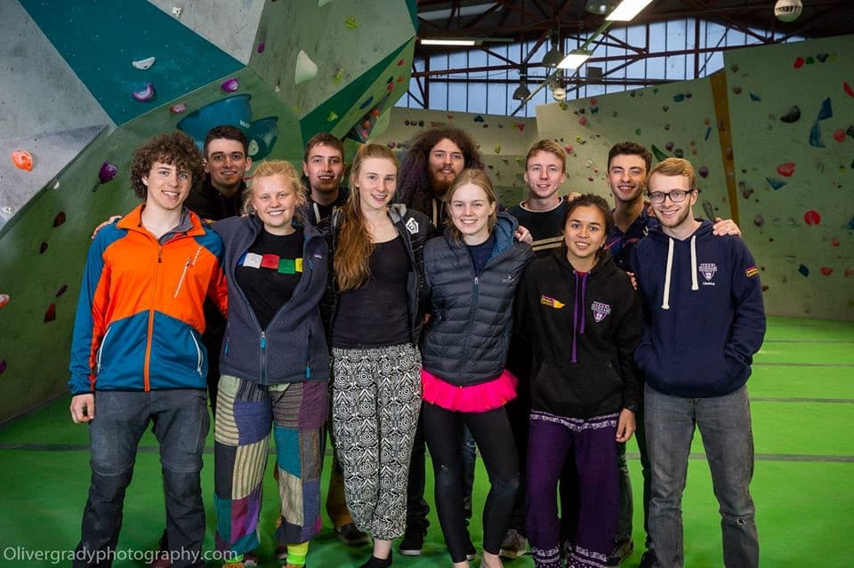

Bouldering Team

Preseason
Preseason week will be held 23rd-27th September. The training will include:
- Lots of indoor bouldering
- Technique sessions at the DCC
- Core sessions
- A friendly bouldering competition in the DCC
- Trips to local crags
- Slacklining
- And a Social!
Competitions
DUMC have an annual BUCS competition in mid-February. To compete in this event members are selected by the bouldering captain. Our bouldering captain for 2019/20 is Adrian Meahcer. If you have any questions about joining the team or Preseason you can email Adrian on the club email mountaineering.club@durham.ac.uk . Throughout the year there are other friendly competitions that we encourage any member to take part in. These took place once a month for October, November, December and February. In April we started a friendly competition at the Valley in Newcastle, a fantastic event for all abilities with food provided and freebies!
